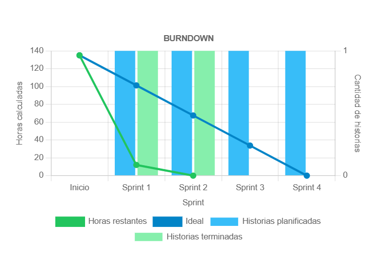
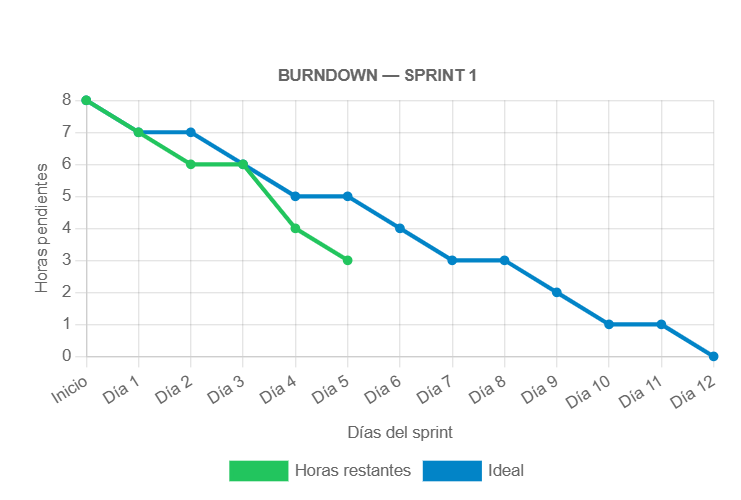

Comunícate mediante mensajes privados con otros usuarios de ScrumBird.
Selecciona un usuario
Mensajes privados
Selecciona una conversación para comenzar.
Bienvenido Usuario:
Mis Proyectos
Invitaciones a proyectos
Rediseño webVer invitación
Crear Nuevo Proyecto
Lista de miembros de la organización
Miembros
Capacitación en Scrumbird
Scrum es un marco de trabajo ágil (agile framework) diseñado para la gestión y desarrollo incremental de
proyectos complejos, especialmente en el ámbito del software. Se basa en un enfoque empírico
(adaptación, inspección y transparencia) donde el trabajo se divide en ciclos iterativos de corta duración
llamados Sprints (habitualmente de 1 a 4 semanas)[cite: 18].
Durante cada Sprint, un equipo multidisciplinario convierte un conjunto de requisitos prioritarios—definidos
en la lista de pendientes o Product Backlog—en un incremento de producto funcional y de valor realizable[cite: 18].
Cada Sprint tiene como objetivo desarrollar una parte funcional del producto. Durante este periodo se
realizan las siguientes actividades[cite: 18]:
Planificación del Sprint: El equipo selecciona las historias de usuario o tareas que se trabajarán y
establece el objetivo del Sprint[cite: 18].
Desarrollo: Los desarrolladores realizan las actividades acordadas, dando seguimiento diario a su
progreso mediante reuniones breves (Daily Scrum)[cite: 18].
Revisión del Sprint: Se presenta el trabajo terminado para recibir comentarios y comprobar que cumple
con lo esperado[cite: 18].
Retrospectiva: El equipo analiza qué salió bien, qué problemas tuvo y qué puede mejorar para el
siguiente Sprint[cite: 18].
Al finalizar un Sprint, se obtiene un incremento del producto. El ciclo vuelve a comenzar hasta completar los
objetivos del proyecto[cite: 18].
Product Owner / Cliente
Es la persona encargada de representar los intereses del cliente y asegurar que el producto desarrollado
aporte valor. Se encarga de definir qué se necesita desarrollar y cuáles son las prioridades del proyecto[cite: 19].
Principales responsabilidades:
Definir y comunicar el objetivo del producto[cite: 19].
Crear, organizar y priorizar el Product Backlog[cite: 19].
Identificar las necesidades del cliente y los usuarios[cite: 19].
Asegurarse de que las historias de usuario estén claras[cite: 19].
Revisar que el producto cumpla con las expectativas[cite: 19].
Característica principal: Es responsable de maximizar el valor del producto[cite: 19].
Scrum Master / Facilitador
Es quien guía al equipo para que Scrum se aplique correctamente. Su función principal es facilitar el trabajo,
promover la colaboración y ayudar a eliminar los obstáculos que puedan afectar el desarrollo del proyecto[cite: 19].
Principales responsabilidades:
Enseñar y promover los principios de Scrum[cite: 19].
Facilitar las reuniones y eventos de Scrum[cite: 19].
Ayudar a resolver impedimentos del equipo[cite: 19].
Fomentar la comunicación y el trabajo colaborativo[cite: 19].
Apoyar al Product Owner y a los Developers[cite: 19].
Característica principal: Es responsable de ayudar a que Scrum se comprenda y se aplique correctamente[cite: 19].
Developer / Desarrollador
Son los integrantes del equipo encargados de construir el producto y convertir los elementos del Product
Backlog en incrementos funcionales. Se organizan y colaboran para alcanzar el objetivo de cada Sprint[cite: 20].
Principales responsabilidades:
Planificar el trabajo que realizarán durante el Sprint[cite: 20].
Desarrollar las funcionalidades del producto[cite: 20].
Mantener la calidad del trabajo[cite: 20].
Colaborar y comunicarse con los demás integrantes[cite: 20].
Revisar los avances y adaptar el trabajo cuando sea necesario[cite: 20].
Entregar un incremento funcional al finalizar el Sprint[cite: 20].
Característica principal: Son responsables de crear un incremento útil y de calidad en cada Sprint[cite: 20].
Herramientas para gestionar las tareas
En ScrumBird existen diferentes herramientas que permiten
organizar y consultar el trabajo del proyecto:
Product Backlog: lista priorizada de historias de usuario.
Sprint Backlog: trabajo seleccionado para una iteración.
Tablero Kanban: seguimiento visual del estado del trabajo.
En las siguientes páginas conocerás la función de cada una.
Product Backlog
Es la lista priorizada de requisitos e historias de usuario
del proyecto. En ScrumBird, el cliente participa en su
definición con apoyo del facilitador.
Historias de usuario:
describen lo que se necesita y sus criterios de aceptación.
Sprints:
organizan el trabajo en iteraciones.
Entregas:
permiten presentar los avances del proyecto.
El Product Backlog puede actualizarse conforme cambian
las necesidades y se obtiene nueva información.
Las historias pueden incluir estimaciones de esfuerzo.
Sprint Backlog
Organiza el trabajo seleccionado para un sprint y las tareas
necesarias para desarrollar las historias de usuario.
En ScrumBird, las tareas pueden incluir:
Nombre.
Descripción.
Responsable.
Sprint asignado.
Durante el sprint, el equipo consulta y actualiza el trabajo.
Si queda trabajo pendiente, debe revisarse para decidir
cómo se atenderá en la siguiente planificación.
Tablero Kanban
Permite visualizar el estado del trabajo y detectar
qué actividades siguen pendientes.
Por empezar:
todavía no se ha iniciado el trabajo.
En progreso:
el equipo está trabajando en la actividad.
En revisión:
el trabajo está siendo revisado.
Terminado:
el trabajo cumple los criterios acordados para finalizarlo.
Mantener el tablero actualizado ayuda al equipo a conocer
el avance y coordinar sus actividades.
Criterios de definición de hecho (DoD)
La Definición de Hecho reúne las condiciones de calidad
que debe cumplir el trabajo para considerarse terminado.
El equipo utiliza estos criterios para comprobar que el
resultado está integrado, revisado y listo para formar
parte del producto.
No basta con terminar de programar: también deben realizarse
las revisiones, pruebas y documentación acordadas.
Los criterios de aceptación indican qué debe cumplir una
historia específica. La Definición de Hecho establece las
condiciones generales de calidad del trabajo terminado.
Ejemplos de criterios de definición de hecho
Los cambios están integrados con el trabajo del equipo.
El código fue revisado por otro integrante del equipo.
La funcionalidad cumple sus criterios de aceptación.
Las pruebas acordadas se ejecutaron correctamente.
El trabajo cumple los requisitos de calidad y seguridad
establecidos.
La documentación necesaria está actualizada.
No quedan errores conocidos que impidan utilizar
la funcionalidad.
Estos ejemplos deben adaptarse a los acuerdos y necesidades
del proyecto.
Estimación del trabajo
Estimar permite al equipo conversar sobre el esfuerzo necesario
para desarrollar las historias de usuario y planificar el trabajo.
Planning Poker:
permite discutir y acordar una estimación para cada historia.
Burndown del Product Backlog:
muestra las horas pendientes del proyecto a través de los sprints.
Burndown del Sprint:
muestra las horas pendientes durante los días de un sprint.
Una estimación es una referencia para planificar y puede
revisarse cuando se obtiene nueva información.
Planning Poker
El equipo revisa una historia, aclara dudas y propone una
estimación mediante cartas. Las estimaciones se revelan
al mismo tiempo y se discuten las diferencias.
Si existen opiniones muy distintas, el equipo explica sus
razones y vuelve a estimar hasta alcanzar un acuerdo.
En ScrumBird, la estimación se expresa en horas. El esfuerzo
calculado se obtiene multiplicando las horas estimadas
por el factor de complejidad configurado.
0123581321345589?
Las cartas de este ejemplo son ilustrativas; aquí no se
realiza una sesión de votación.
Burndown Chart del Product Backlog
Compara las horas pendientes del proyecto con una referencia
ideal a través de los sprints.
Eje horizontal: sprints del proyecto.
Eje vertical: horas pendientes.
Línea ideal: descenso uniforme del esfuerzo.
Línea de seguimiento: mediciones registradas.

Ejemplo ilustrativo del avance de un proyecto por sprint.
Burndown Chart del Sprint
Permite observar cómo cambian las horas pendientes dentro
de un sprint. Cada punto corresponde a una medición diaria.
Eje horizontal: días del sprint.
Eje vertical: horas pendientes.
Si la línea de seguimiento está por encima de la ideal,
queda más trabajo pendiente del esperado.
Si está por debajo, queda menos trabajo pendiente del esperado.

Ejemplo ilustrativo del avance diario de un sprint.
Un día sin medición significa “sin registro”,
no necesariamente cero horas pendientes.